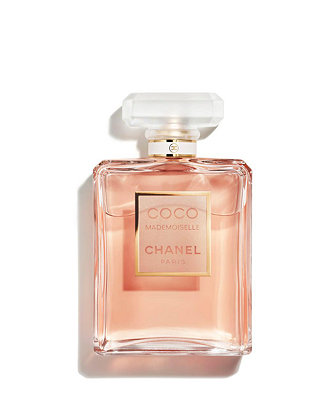
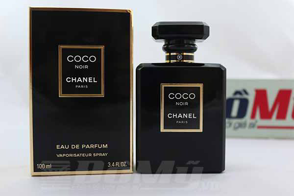

Tên sản phẩm: Nước Hoa Coco Noir Chanel for Men and Women 100ml
Quy cách đóng gói: 100ml
Hãng sản xuất: ChanelXuất xứ: Mỹ
Công dụng của sản phẩm
- Vỏ chai đen thể hiện sự bí ẩn, mạnh mẽ và thích phiêu lư Kiểu dáng quý phái, sang trọng, thích hợp để làm quà tặng cho bạn bè, người thân. Hương đặc trưng: Xạ hương, hạt Ambrette, trái cây Phong cách Quyến rũ, đầy tự tin
- Vỏ chai hồng thể hiện sự trẻ trung, quyến rũ. thích hợp làm quà cho người thân và bạn bè. hương trái cây, hoa hồng tươi mát quyến rũ